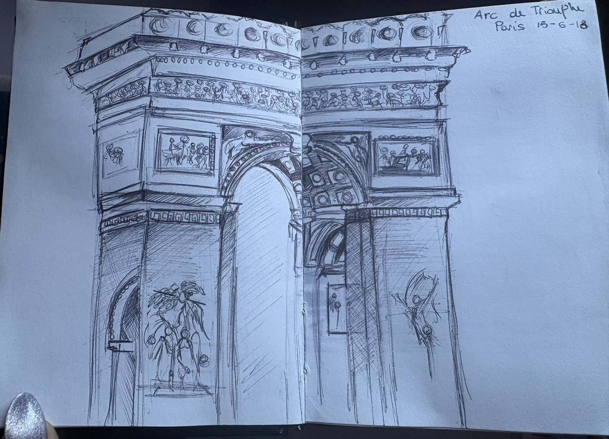
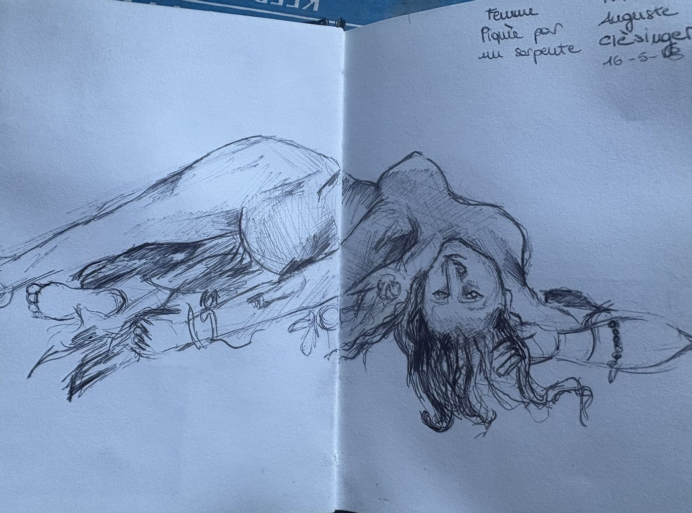

Tutto è cominciato con la pittura
Al liceo artistico passavo le giornate tra matite, pennelli e argilla: disegno dal vero, colore, pittura, scultura. Lì ho imparato a guardare con attenzione, e uno sketchbook me lo porto ancora dietro ovunque.

Ciao, sono
Dalla pittura alla grafica. Una mente creativa e ibrida: leggo le esigenze reali di un brand e ci aggiungo valore. La mia regola: think big.
Al liceo artistico passavo le giornate tra matite, pennelli e argilla: disegno dal vero, colore, pittura, scultura. Lì ho imparato a guardare con attenzione, e uno sketchbook me lo porto ancora dietro ovunque.
A un certo punto volevo che le mie immagini parlassero a più persone e servissero a qualcosa. Così sono passata alle arti grafiche e al Communication Design allo IAAD: programmi, art direction, copywriting, marketing e video.
Dalla pittura ho tenuto l'occhio e la mano, dal design il metodo. Parto dalle esigenze reali di un'azienda, le analizzo e le trasformo in qualcosa che aggiunge valore: un'identità, un packaging, una campagna.
Packaging e still life da Tech Art, poi tre anni in CHICOM: immagine coordinata, social, sito, catalogo, una landing page, video e stampa per clienti come Leonardo, Barilla, Coca-Cola e Raspini.
Sono appassionata di cinema e di mostre, e adoro viaggiare: Parigi, Barcellona e ogni città che visito finiscono nel mio sketchbook. Molti dei miei progetti partono da una scena di un film, da un quadro o da un angolo di città.
Sposta i fogli, clicca per vederli grandi.


IAAD – Istituto d'Arte Applicata e Design, Torino
Discipline grafiche e programmi, art direction, copywriting, marketing e video. Tesi: FLUID*, un festival edutainment progettato con WOVO.
Primo Liceo Artistico, Torino
Disegno dal vero, tecniche del colore, pittura, scultura e progettazione.
Marchi e immagini coordinate per aziende e piccole attività.
Dal concept alla messa in stampa, con lo shooting di prodotto.
Piani editoriali, grafiche e testi che fanno riconoscere un brand.
Montaggio e motion per campagne, clienti e social.
Dal nome al palco: identità, spazi, programma e comunicazione.
Cataloghi, leaflet, pannelli espositivi e siti WordPress.
Photoshop · Illustrator · InDesign · Premiere Pro · After Effects · Lightroom · XD
Canva · CapCut · WordPress · AI generativa
Social media management · content writing · SEO
Gestione clienti · coordinamento team · preventivi e scadenze
Cinema · mostre · viaggi · sketchbook
Hai un brief? Si può fare.